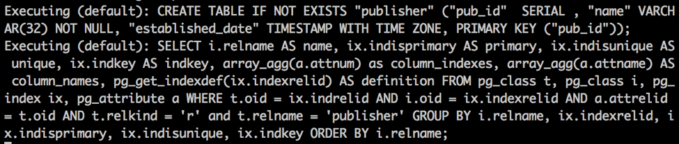
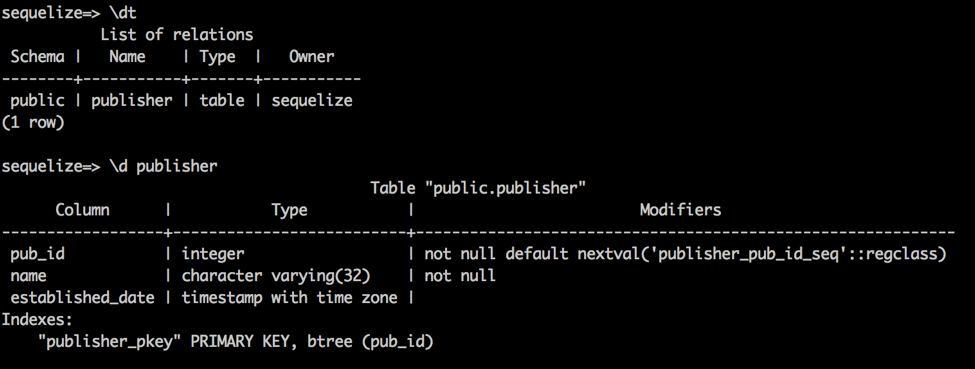
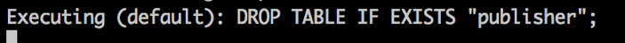
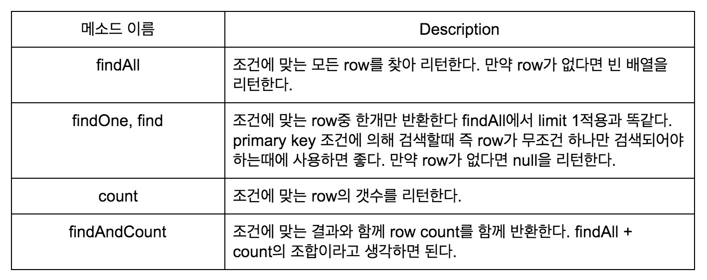
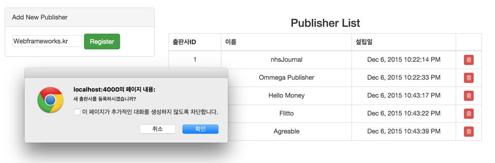

ExpressJS에서 Sequelize 사용하기2
Sync
Sequelize에서는 INSERT, SELECT, DELETE, UPDATE와 같은 DML뿐만 아니라 DDL문도 지원하는데 model에 정의된 스펙을 기준으로 Database의 테이블들을 동기화할 수 있다. 그때 사용하는 메소드가 sync메소드이다. 첫 번째 챕터 model define에 관한 예제였던 publisher model내역이다.
sequelize.define('Publisher', {
pub_id: {type: DataTypes.INTEGER, primaryKey: true, autoIncrement: true},
name: {type: DataTypes.STRING(32), allowNull: false},
established_date: {type: DataTypes.DATE, defaultValue: DataTypes.NOW}
}, {
classMethods: {},
tableName: 'publisher',
freezeTableName: true,
underscored: true,
timestamps: false
});이렇게 정의된 model에 대해서 sync를 하면 어떻게 될까? postgres에서 Database공간의 table의 리스트를 보는 명령어는 \dt 이다. sync를 하기전 database의 상황을 살펴보자
sequlize=> \dt
No relations found.
현재 Database공간에는 아무런 테이블도 생성되지 않았다. 그렇다면 다음과 같이 sync 메소드를 호출해보자.
db.Publisher.sync();
콘솔창에서는 로그를 확인할 수있다.

CREATE TABLE IF NOT EXISTS “publisher” 가 맨 윗줄에 보이는가? Publisher model에 대한 sync메소드를 호출시 하는 작업은 publisher테이블을 생성하는 일이다. NOT EXISTS조건이 있기 때문에 sync를 매번 하더라도 table이 없을때만 테이블 생성이 될 것이다. 다시 한번 테이블 리스트를 확인해보자.

publisher 테이블이 생성된 것을 확인할 수 있다. 세부적인 테이블정보를 보면 publisher model을 정의했던 내용대로 pub_id는 primary key로 지정되었고 auto increment sequence를 갖게 되었다. 나머지 column들도 정의된대로 테이블이 생성된 것을 확인 할 수 있다. sync와 반대되는 개념의 메소드는 drop이다. drop은 테이블을 drop한다. drop메소드를 실행하면
db.Publisher.drop();

drop명령어가 실행되고 publisher테이블이 삭제된 것을 확인할 수 있다. sync에는 몇가지 옵션을 parameter로 넘길 수 있는데 대표적으로 force옵션이 있다.
db.Publisher.sync({force: true});
force를 true로 놓고 sync를 실행하면 publisher테이블은 먼저 drop된 이후에 새로 생성이 된다. force옵션의 경우에는 민감한 작업을 실행하는 만큼 주의를 요하도록 한다. 또한 소스코드내에서 table에 대한 DDL까지 실행하는 것은 위험부담이 있기 때문에 되도록이면 table에 대한 관리는 flyway와 같은 관리모듈을 사용하거나 수동으로 진행하고 sync, drop 그리고 특히 force true 옵션 사용은 자제하도록 한다.
Querying(SELECT)
이제 Sequelize를 통해 SELECT를 사용해보도록 하자.출판사 리스트를 가져오는 쿼리는 다음과 같다.
models.Publisher.findAll().then(function(results) {
res.json(results);
}).catch(function(err) {
//TODO: error handling
});publisher테이블에 있는 내용을 모두 가져오는 쿼리이다. Sequelize의 모든 쿼리 결과는 promise로 리턴 되기 때문에 findAll메소드 역시 promise를 리턴한다. 실제 쿼리 결과는 then의 callback에서 가져올 수 있다. catch문에서는 적절한 error handling을 해주면 된다. 이렇게 API를 호출해서 받아온 출판사리스트를 확인할 수 있다. Sequelize를 통해 가져온 값이다.

SELECT와 관련있는 model 메소드는 findAll말고도 몇개가 더 있다. 아래 테이블을 참고하자.

이중에서 가장 많이 사용되는것은 findAll, find 이다. 공통적으로 많이 사용되는 옵션에 대해서 알아보자
findAll([options]) -> Promise.<Array.<Instance>>
1) where : where옵션은 SQL문에서 where에 해당하는 부분을 기술하는 옵션이다.
type : object
example :
SELECT * FROM publisher WHERE pub_id=1을 sequelize로 표현하면
models.Publisher.findAll({
where: {pub_id: 1}
}).then(function(result) {
//TODO: query결과가 담긴 result에 대한 처리 진행
});- example :
SELECT * FROM publisher WHERE pub_id > 1 AND pub_id < 4
models.Publisher.findAll({
where: {
$and: [{pub_id: {$gt: 1}}, {pub_id: {$lt: 4}}]
}
}).then(function(results) {
//TODO: query결과가 담긴 result에 대한 처리 진행
});더 많은 예제는 이곳에서 찾을 수 있다. Sequelize model usage
2) attributes: table의 특정 column만 select할 때 사용
type: array | object
example :
SELECT pub_id, name FROM publisher를 sequelize로 표현하면
models.Publisher.findAll({
attributes: ['pub_id', 'name']
}).then(function(results) {});- example : SELECT pub_id, name FROM publisher는 다음과 같은 방식으로도 표현
models.Publisher.findAll({
attributes: {exclude: ['established_date']}
}).then(function(results) {});
// exclude는 table의 column중에서 제외시킬 리스트를 넣고 include에는 포함시킬 리스트를 넣는다.3) order: SQL문의 order by에 해당하는 부분을 기술하는 옵션이다.
type: string | array
example :
SELECT * FROM publisher ORDER BY pub_id DESC는 다음과 같다.
models.Publisher.findAll({
order: 'pub_id DESC'
}).then(function(results){});
// order: 'pub_id DESC’ 는 order: [['pub_id', 'DESC']] 로도 사용할 수 있다.4) limit, offset: SQL문의 limit, offset에 해당하는 부분을 기술하는 옵션
type : Number
example :
SELECT * FROM publisher LIMIT 1 OFFSET 1은 다음과 같다.
models.Publisher.findAll({
offset: 1,
limit: 1
}).then(function(result) {});5) include: Eager loading, Relation과 관련된 옵션으로 다음 챕터에서 알아보도록 하자.
6) transaction: 어떤 하나의 트랜잭션 안에서 동작하도록 하는 옵션. 다다음 챕터에서 알아보도록하자.
findAll, find에 대해 더 알아보고 싶다면 이 곳을 참고하자 Sequelize-model-findAll
Querying(INSERT)
예제 Publisher 메뉴에 가면 이런 화면을 볼 수 있을 것이다.

우측에는 미리 넣어놓은 5개의 출판사 정보가 있고 ‘Webframeworks.kr’ 의 이름을 가진 새 출판사를 등록해보자. Register버튼을 누르면 등록 API를 call하고 서버에서는 이와 같은 쿼리를 실행한다.
models.Publisher.create({name: options.name}).then(function(result) {
res.json(result);
}).catch(function(err) {
//TODO: error handling
});options.name에는 화면에서 적었던 Webframeworks.kr 문자열이 들어있다. Sequelize model의 create메소드는 SQL의 INSERT INTO와 같은 역할을 한다. 메소드의 형태는 다음과 같다.
create(values, [options]) -> Promise.<Instance>
values에는 실제로 insert할 값들에 대한 object가 들어간다. options에는 부가적인 정보가 들어가는데 transaction에 대한 정보가 대표적이다. create메소드 역시 promise를 리턴하며 성공적으로 쿼리가 실행되었을 경우에는 insert된 row정보를 얻을 수 있다. API호출이 성공되면 화면에서 새로 추가된 출판사 정보를 확인할 수 있다.

row여러개를 한꺼번에 insert하려면 bulkCreate 메소드를 이용하자 create와 사용방법은 똑같다. 차이점은 첫번째 파라미터에 value object들에 대한 array가 들어가야 한다는 것이다.
bulkCreate(records, [options]) -> Promise.<Array.<Instance>>
create메소드에 대해서 더 알아보고 싶다면 이곳을 참조하자 Sequelize-model-create bulkCreate메소드에 대해서 더 알아보고 싶다면 이곳을 참조하자 Sequelize-model-bulkCreate
Querying(UPDATE)
등록한 출판사의 이름이 잘못등록되어 수정이 필요하다면? Webframeworks.kr의 출판사 이름을 Webframeworks로 바꿔보자. 아래 예제 그림처럼 변경할 출판사 이름을 적고 Update버튼을 누르면 변경 API를 call하고 서버에서는 다음과 같은 쿼리를 실행한다.

models.Publisher.update({name: newName},
{where: {pub_id: pub_id}, returning: true}).then(function(result) {
res.json(result[1][0]);
}).catch(function(err) {
//TODO: error handling
});SQL문으로는 UPDATE publisher SET name='Webframeworks' WHERE pub_id=6 RETURNING * 과 같다.
update메소드는 조건에 맞는 복수개의 row에 대해서 update를 실행한다. 메소드의 형태는 이렇다.
update(value, options) -> Promise.<Array.<affectedCount, affectedRows>>
values에는 update해야할 value들의 object가 들어간다. options에 사용되는 것중 대표적으로는 transaction관련 옵션이 있고 postgres에서만 사용할 수 있는 returning옵션이 있다 returning 옵션이 true이면 update결과 후 row의 정보가 리턴된다. 결과로는 array타입이 리턴되는데 첫번째 인덱스에서는 update된 row의 갯수를 두번째 인덱스에서는 update된 row들의 정보를 얻을 수 있다. API호출이 성공되면 다음과 같이 값이 정상적으로 update된것을 확인할 수 있다.

update메소드에 대해 더 알아보고 싶다면 이곳을 참조하자 Sequelize-model-update
Querying(DELETE)
위에 예제 스크린샷들을 보면 맨 오른쪽에 있는 휴지통 빨간버튼이 보일 것이다. 이 버튼은 해당 출판사의 정보를 삭제하는 버튼이다. Webframeworks로 등록된 출판사를 삭제해보자. 버튼을 누르면 삭제 API를 call하고 서버에서는 다음과 같은 쿼리가 실행된다.
models.Publisher.destroy({where: {pub_id: pub_id}}).then(function(result) {
res.json({});
}).catch(function(err) {
//TODO: error handling
});SQL문으로는 DELETE FROM publisher where pub_id = 6; 과 같다
destroy메소드는 SQL에서 DELETE와 같은 역할을 하며 조건에 맞는 복수개의 row를 삭제한다.
메소드의 형태는 이렇다.
destory(options) -> promise<integer>
options에 필수적으로 빼놓지 말고 넣어야 하는 사항은 where조건이다. where조건을 넣지 않고 destroy메소드를 실행하면 테이블에 있는 모든 row가 삭제되므로 꼭꼭 조심하도록 하자. 그외에는 transaction 옵션등이 들어간다. delete메소드에 대해 더 알아보고 싶다면 이곳을 참조하자. Sequelize-model-destroy
이번챕터에는 정의된 model에 대한 sync작업과 간단하게 CRUD작업을 할 수 있는 예제를 통해 Sequelize 사용법을 알아보았다. find, findAll의 경우에는 option을 어떻게 주느냐에 따라 복잡한 쿼리에 대응하는 작업도 할 수 있는 만큼 많이 사용해보길 바란다. 다음 챕터에서는 Sequelize로 테이블의 relation을 만들어주고 join을 포함한 작업 및 raw query의 사용법등을 알아보도록 한다.